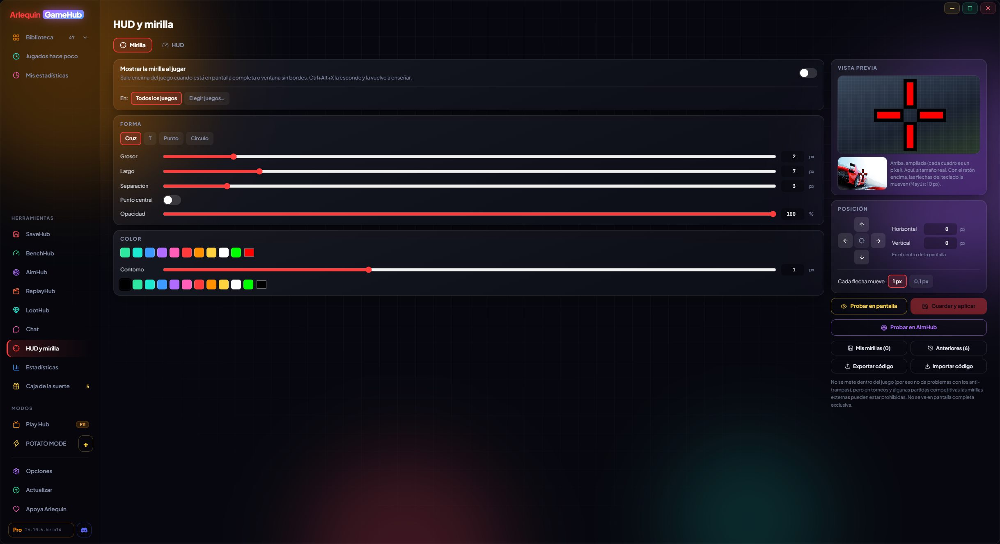

필요한 것을, 게임 위에
FPS, 온도, 전력 소비를 보여 주는 HUD와 맞춤형 조준선. 게임 내부에 들어가지 않으므로 안티치트와 문제가 없습니다.
HUD: 플레이 중 내 데이터
FPS, CPU, GPU, 메모리, 시간을 게임 화면 한구석에, 원하는 방식으로.
각 줄은 하나의 그룹(FPS, GPU, CPU, 그래픽 메모리, RAM, 시간)이며 자체 라벨과 색상이 있고, 각각 어떤 데이터를 표시할지 고를 수 있습니다. 원하는 대로 순서를 정하고 개별적으로 끌 수 있습니다.
모서리, 여백, 항목마다 한 줄로 할지 전부 한 줄로 할지, 글꼴 크기와 서체, 굵게, 색상, 배경, 배경 없이도 읽을 수 있게 해 주는 글자 윤곽선, 갱신 주기(0.25~2초)를 선택할 수 있습니다.
무선 기기의 배터리도 기기당 한 줄로 표시할 수 있습니다(충전 중에는 ⚡, 부족하면 빨간색): PlayStation, Xbox, Switch, 8BitDo 컨트롤러, Corsair, Razer, SteelSeries, HyperX, Logitech 헤드셋, Logitech 마우스와 키보드, 그리고 Bluetooth로 연결된 기기.
편집하는 동안 그 순간의 내 PC 실제 데이터로 미리보기를 볼 수 있습니다. 보일 때만 데이터를 읽으며, HUD를 숨기면 아무것도 사용하지 않습니다.
HUD를 하단 중앙에 둘 수도 있고, 노트북 배터리(충전 여부 포함) 줄이 있으며, 그래픽 메모리 줄에 온도를 표시할 수 있습니다. Razer BlackShark V3 Pro 헤드셋이나 수신기가 있는 VXE, ATK, Pulsar 마우스처럼 더 많은 기기의 배터리를 읽습니다.
Discord, OBS, Streamlabs로 스트리밍하면 HUD는 그 미리보기가 아닌 내 게임의 FPS를 표시하며, 파일이 손상되어도 저장해 둔 HUD와 조준선을 더 이상 잃지 않습니다.
HUD는 앞에 있지 않더라도 열려 있는 게임의 FPS를 표시하고, 항상 화면에 남아 있을 수 있으며(바탕화면에서도), 화면이 여러 개면 어느 화면에 표시할지 고를 수 있습니다.
사용 방법
- 도구 → HUD와 조준선 → HUD.
- “화면에서 테스트”를 누르면 모든 것 위에 즉시 표시됩니다.
- 플레이하면 저절로 나타나며, Ctrl+Alt+H로 숨기고 다시 표시합니다.

표시 항목
Windows가 기본 정보를 제공하고, 온도와 전력 소비는 센서 프로그램에서 가져옵니다.
아무것도 설치하지 않고(작업 관리자가 쓰는 것과 같은 데이터): FPS와 프레임 타임, CPU 사용률과 실제 MHz, GPU 사용률, MHz, 온도, 팬, 그래픽 메모리와 사용 중인 RAM(원하면 전체 용량과 함께).
센서 프로그램을 연 상태에서: CPU 온도와 전력 소비, RAM 온도, GPU 핫스팟과 메모리 온도, 와트 단위 전력 소비(AMD는 보드 전체의 TBP). Windows는 특수 드라이버 없이는 이 데이터를 제공하지 않으므로, GameHub는 이미 사용 중인 프로그램에서 읽어 옵니다. 직접 다운로드 버전에서는 "고급 센서"(선택 사항, Windows 권한 필요)를 켜서 다른 프로그램을 열지 않고도 이 데이터를 얻을 수 있습니다. Microsoft Store 버전에서는 센서 프로그램을 사용하세요.
여러 개를 열어 두면 각 값은 그 값을 가진 첫 번째 프로그램에서 가져오고, 하나가 닫히면 눈치채지 못하게 다음 프로그램으로 이어집니다. 편집기에서 값 위에 마우스를 올리면 어느 프로그램에서 오는지 표시됩니다. 아무것도 없으면 해당 값은 “—”로 표시됩니다(선택하면 숨겨집니다).
사용 방법
- HWiNFO: 설정에서 “Shared Memory Support”를 체크하세요(무료 버전에서는 12시간마다 꺼집니다).
- LibreHardwareMonitor: Options → Remote Web Server → Run.
- MSI Afterburner: 열어 두기만 하면 됩니다(RTSS와 함께라면 FPS도 제공합니다).
작동하지 않음
- HWMonitor: 데이터를 다른 프로그램과 공유하지 않습니다.
맞춤형 조준선
기본적으로 정중앙에 있으며 0.1픽셀 단위로 조절할 수 있습니다.
편집기에서 모양(십자, T, 점, 원), 두께, 길이, 간격, 반지름, 중앙 점, 색상, 불투명도, 윤곽선과 그 색상을 고를 수 있습니다. 한 칸이 한 픽셀인 확대 미리보기와 실제 크기 미리보기로 확인할 수 있습니다.
화면의 정확한 중앙에 표시되며 한 픽셀씩, 또는 0.1픽셀 단위로 옮길 수 있습니다. 소수점 값은 고전 게임처럼 두 픽셀에 걸쳐 표시되어 정확한 위치에 맞춰집니다(화면에는 반 픽셀이 없으므로 약간 덜 선명합니다).
일반 매치에서는 많은 사람이 사용하지만, 토너먼트와 일부 경쟁 매치에서는 외부 조준선이 금지될 수 있습니다. 플레이하는 게임의 규칙을 확인하세요.
사용 방법
- 도구 → HUD와 조준선 → 조준선.
- 화면의 화살표나 키보드 방향키로 움직입니다(Shift: 10 px).
- 플레이하면 저절로 나타나며, Ctrl+Alt+X로 숨기고 다시 표시합니다.

그래픽 카드 커넥터 감시
그래픽 카드의 16핀 커넥터가 타기 전에 경고합니다.
16핀 커넥터(12VHPWR / 12V-2x6)를 쓰는 일부 그래픽 카드는 접촉 불량으로 커넥터가 탄 사례가 있습니다. GameHub는 플레이하는 동안 HWiNFO를 통해 그래픽 카드가 제공하는 값을 지켜보다가, 이상한 값이 몇 초간 이어지면(한 번의 튐이 아니라) Windows 알림과 게임 위의 빨간 줄로 경고합니다.
- ASUS ROG Astral 및 ROG Matrix(RTX 4090, 5080, 5090): 각 핀의 전류. 한 핀이 과부하이거나, 다른 핀은 흐르는데 한 핀만 0일 때(접촉 불량) 경고합니다.
- 16핀을 쓰는 그 밖의 NVIDIA RTX 40 및 50 카드: 커넥터 전압. 전압이 일정 시간 떨어지면 접촉 불량이거나 케이블이 마모되고 있는 것입니다.
- 그 밖의 카드(Sapphire NITRO+ RX 9070 XT PhantomLink 등): HWiNFO가 커넥터 센서를 읽을 수 있게 되면 사용할 수 있도록 준비되어 있습니다.
PC를 끄거나 게임을 닫지 않습니다. 무슨 일이 일어나고 있는지와 무엇을 해야 하는지 알려 줍니다(저장하고, 게임을 닫고, 케이블이 끝까지 꽂혀 있고 커넥터 근처에서 급하게 꺾이지 않았는지 확인하세요).
사용 방법
- HWiNFO를 열어 두면(데이터 공유 상태) 자동으로 작동합니다.
- 8핀 커넥터를 쓰는 그래픽 카드에는 필요하지 않습니다.
저장, 복원, 공유
내 HUD와 조준선을 그대로 보관합니다.
HUD나 조준선을 이름(“경쟁전”, “Valorant 초록” 등)과 함께 저장해 두고 언제든 다시 불러오세요. 다른 것을 저장할 때마다 이전 것은 만일을 대비해 “이전” 목록(최근 20개)에 남으며, 확인하고 되돌리거나 삭제할 수 있습니다.
모든 게임에서 표시할지, 고른 게임에서만 표시할지 선택하세요. 모든 게임이 슈팅 게임은 아니니까요. 그리고 코드(ARLQ-MIRA-… 또는 ARLQ-HUD-…)로 공유해 친구가 써 볼 수 있게 하세요. 코드 생성은 ArlequinPro에 포함되며, 코드 불러오기는 누구나 무료입니다.
사용 방법
- 편집기의 “내 조준선” / “내 HUD”와 “이전”.
- “코드 내보내기”(ArlequinPro)와 “코드 가져오기”(무료).
- “코드 가져오기”는 CS2와 VALORANT 조준선 코드도 받아들이고, 내 PC의 CS2 조준선을 불러오며, “AimHub에서 테스트”는 여러 배경 위에서 보여 줍니다.
- «CS2 또는 VALORANT용으로 복사»(ArlequinPro)는 게임에서 가져올 수 있도록 조준선을 복사합니다.